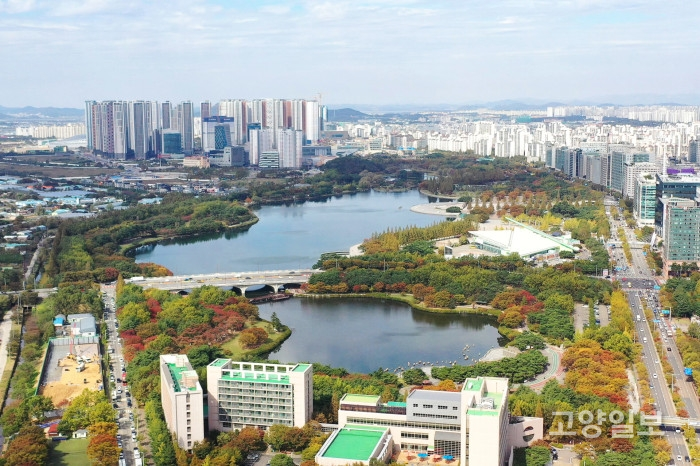

처음
일산 소개

일산 역사
경기도 고양시 일산서구에 위치한 동(법정동). 행정동으로는 1동부터 3동까지 있다. 구한말 경의선이 부설되고 일산역이 설치되었다. 고양군 중면 일산리였다가, 1980년 중면이 일산읍으로 승격되면서 일산읍 일산리가 되었다. ..생략
일산 지리
일산신도시는 비슷한 시기에 지어진 1기 신도시들 중 인구밀도가 가장 낮고 전원주택이 많다. 이 전원주택들은 신도시 중앙에 있는 정발산동에 집중적으로 분포해 있다. 일산 호수공원과 정발산공원 등 녹지가 많으며, 그 면적은 353만 7천㎡(일산신도시 전체 면적의 22.5%)로 월등히 높다. 다만 인근에 조성된 덕양구 화정동 화정지구와 일산동구 식사동 식사지구가 난개발되었다 ..생략
일산 생활
다목적 전시 컨벤션센터이자 최북단의 전시장인 킨텍스(KINTEX)가 대화동에 있다. 본래의 목적인 대규모 전시회뿐만 아니라 유명가수의 콘서트도 간간이 공연되며 때때로 각종 정당들의 전당대회가 개최되기도 한다. 이는 자유로가 인접해 있어서 전국 각지에서 상경하는 당원들의 접근이 가능하며 또한 중앙당이 위치한 여의도와 비교적 가깝기 때문이다. ..생략